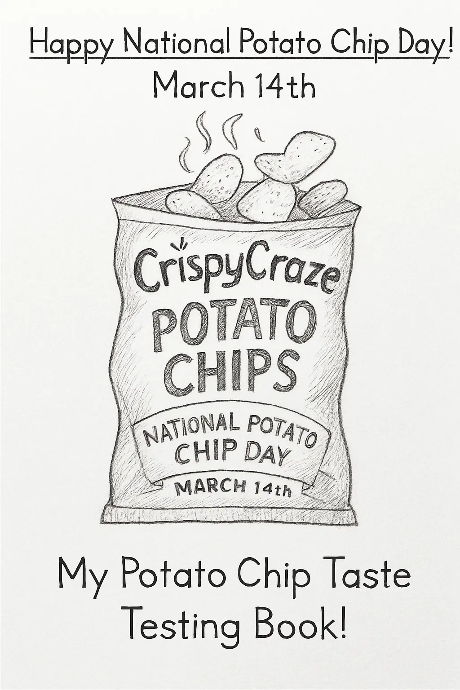

Word |
English Meaning |
Hindi Meaning |
Endowed |
Gifted or provided naturally |
नवाजा गया / प्राकृतिक रूप से मिलना |
Statesman |
A skilled or respected political leader |
राजनेता |
Funnels |
Tube-like shapes used to guide something |
कीप (छानने वाला यंत्र) |
Utter |
To speak or say something aloud |
बोलना / उच्चारण करना |
Master |
One who has control over something |
स्वामी / मालिक |
Slave |
Someone who has no control/is bound |
गुलाम |
Amends |
To make up for a mistake or hurt |
हर्जाना भरना / सुधार करना |
Stammered |
Spoke with pauses or repetitions |
हकलाकर बोलना |
Exhausted |
Very tired or worn out |
बहुत थका हुआ |
Counselled |
Gave advice or guidance |
सलाह दी / परामर्श दिया |
Affirmative |
Agreeing or saying "Yes" |
सकारात्मक / 'हाँ' में उत्तर |
Veracity |
Truthfulness or accuracy |
सच्चाई / सत्यता |
Transmitters |
People who spread or pass something |
फैलाने वाले / संचारक |
Vain |
Useless or without value |
व्यर्थ / बेकार |
Idleness |
Being lazy or having no work |
आलस्य / निठल्लापन |